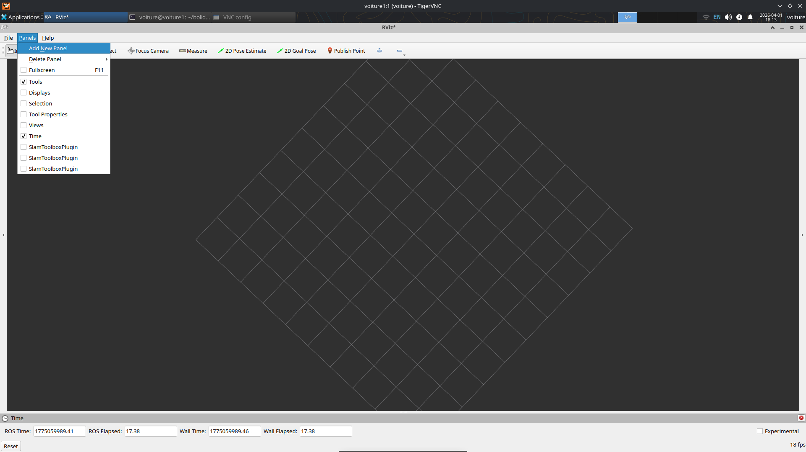
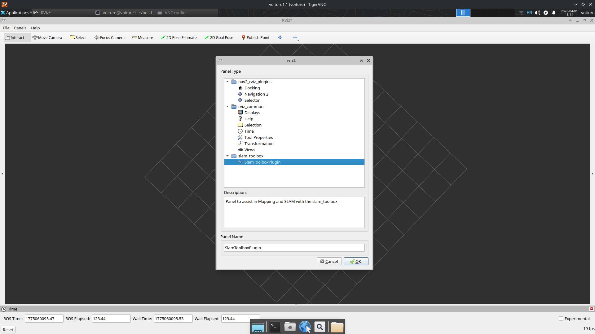
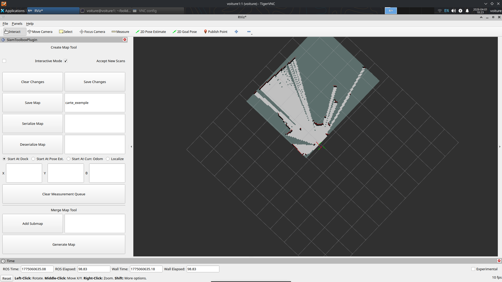
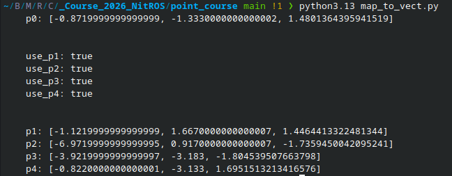

Procédure de course
Création de la carte
Ouvrez une vnc sur la raspberry: Tutoriel dans quick start
Ouvrez un terminal dans la vnc et écriver
rviz2
Puis dans 3 terminaux different en ssh depuis votre pc lancez :
ros2 launch bolide_teleop sensors.launch.py
ros2 run bolide_teleop teleop_keyboard
ros2 launch slam_toolbox online_async_launch.py
Faites le tour de la piste en teleopération puis dans rviz2
Cliquez sur Add New Panel

Cliquez sur SlamToolBox_Plugin

Ecrivez le nom de la map, cliquez sur Save Changes puis Save Map

Pour vérifier que la map est bien sauvegarder, regardez dans le fichier ~/bolide_voiture si il y a votre map (deux fichier en format .yaml et .pgm).
Si la map n’est pas sauvegarder, recliquer plusieurs fois sur Save Map.
Déplacer la map dans ~/bolide_voiture/maps
Modifier la map si elle est moche sur une application de votre choix (gimp ou autre).
Création des points de trajectoire
Télécharger dans le (Github) le fichier point_course.
Copier ensuite votre map dans ce fichier et changer le path dans map_to_vect.py et affichage.py.
Lancer le dans votre terminal
python map_to_vect.py
Cliquer une fois pour la position puis un deuxième pour l’orientation.
Recommencez l’etape 1. pour avoir 4 ou 5 points sur la map.
Fermez la carte.
Vous devriez voir ceci :

Notez que p0 est uniquement le point initial et la trajectoire ne sera passera que par les points p1 à p4
Coller le résultat dans le fichier race_params.yaml de la raspberry pi
Et ajoutez les points dans affichage.py et lancez le pour vérifier les points.